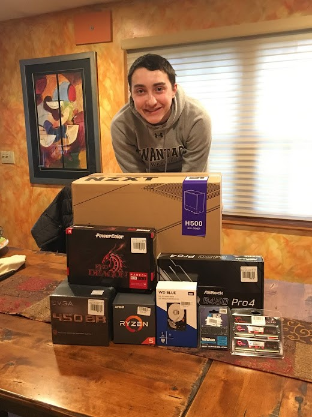

>3D Printing / 3D design:
When I was 10 years old I saw a 3D printer for the first time. I was fascinated by the technology and the opportunities that came with it. Later that same year I started designing basic 3D objects using CAD. After a few years I bought myself a 3D printer. I designed and built many custom parts that I use in my house everyday. Some of the items I designed and printed include a custom headphone holder for my desk, a towel hanger spacer for my bathroom door, and unique cookie cutters. I also was able to print a rare part for my father's classic car's convertible top. This part if we were able to purchase it would have cost a few hundred dollars.
>Automotive:
Growing up my father brought me to car shows. He was always showing me what makes each car different and unique. Why the mustang was different than the Shelby GT500 or why the corvette built in Michigan was different from ones built in St. Louis. He is why I am good with my hands as he always tried to get me involved in basic repairs such as brake pads, oil changes, and tire rotations. In addition, he also showed me how to take a project car that didn’t run, and make it a good car to drive daily. We did everything from changing the exhaust to fully rebuilding the engine and even swapping a new engine.
>Computer Hardware:

In 2016 I explored the idea of building a custom PC for myself. I then went on to learn everything I could about what parts would be good for my needs. For example I discovered which CPU was good for what application and why you needed to get flash storage instead of hard drives. In 2019 when I turned 15, for a late birthday present my parents told me to get my wallet and get in the car. They drove me to computer store where I could buy my selected parts to begin to assemble my PC. I had to get everything from the case, to the graphics card to a motherboard. When I got home, I got to work and put it all together. There is no better feeling than having your first PC boot up on the first try. I use this PC everyday to do everything from talking to friends, to homework, to gaming.
>Gaming:

Starting when I was little I loved gaming. When I was 4 my parents got my sister and I a Wii. We played everything from Mario Kart to Wii Party. When I was in middle school I got an Xbox for the holidays. This was the first time I was able to play with my friends who weren’t in front of me. We played old games like Halo 3, Minecraft, MLB 2013. Then, when I built my PC, I started playing games like GTA V, Forza Horizon, Red Dead Redemption 2, and VR Chat.